Office
island
Mentor: Andrea Hercog, Nina Pavlinek
Industrial design 5
2022.
In the office setting, this drawer unit isn't just a place for storing office supplies—it's a
central hub encouraging employee interaction. Its design, almost like a piece of art, naturally
draws people to gather around it during breaks. Positioned at counter height, it offers a spot
to lean on and use the surface as a temporary workspace. More than just storage, it fosters a
sense of community, sparking impromptu conversations and collaboration among coworkers.
Beyond its utilitarian function, this drawer unit assumes a role far beyond mere storage. Its
thoughtful design invites not just efficient organization but also cultivates a conducive
environment for spontaneous interactions, encouraging a dynamic flow of ideas and fostering a
sense of cohesion within the office space. As employees gravitate towards its inviting presence,
it becomes a catalyst for both productivity and a sense of communal belonging, transcending its
conventional role as a simple storage unit.
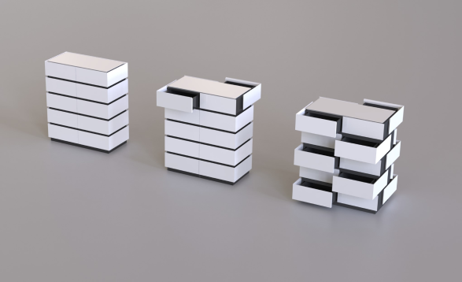
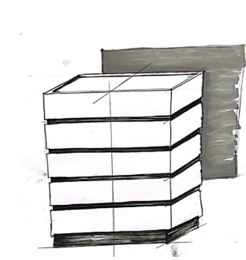
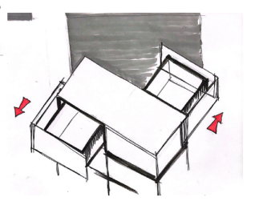
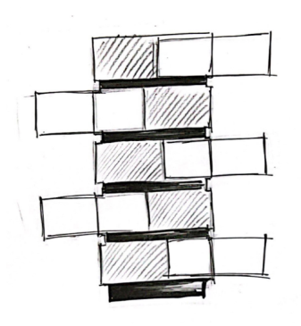
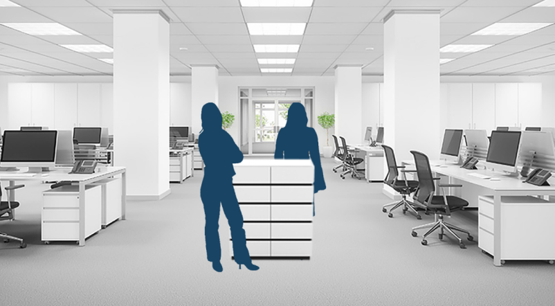
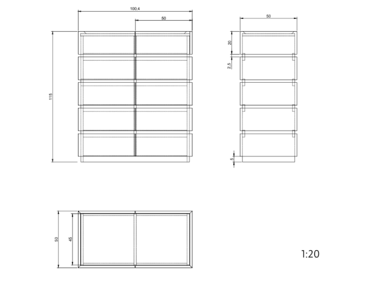
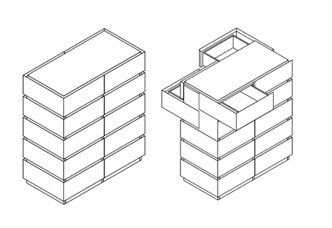
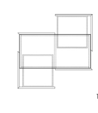
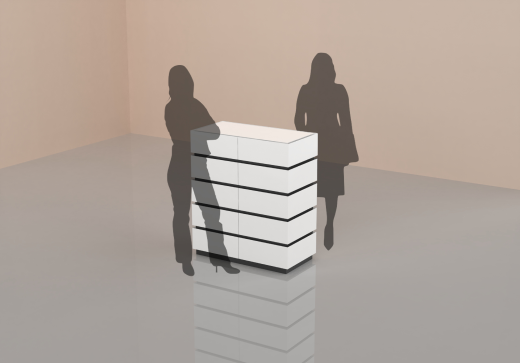
variations in material
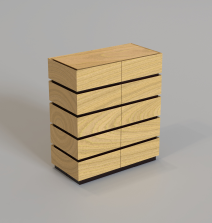
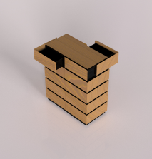
Breaks are pivotal moments in a workday, often overlooked but crucial for boosting productivity.
In an office setting, an invitingly shaped office island becomes a focal point, beckoning
colleagues to convene and reconnect during these valuable intervals.
system
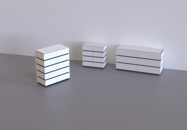
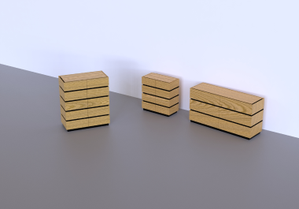